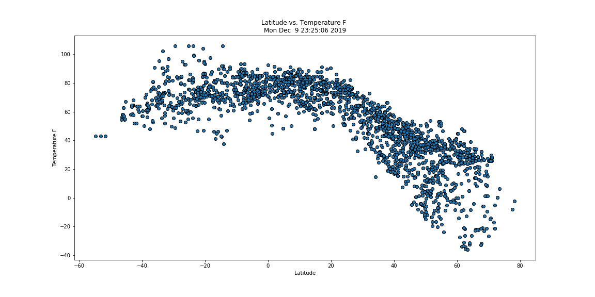

Latitude vs. Temperature F
Temperature plotted against Latitude for 2200+ cities around the globe.
It is very clear in this plot that temperature is highly correlated to latitude. The curve is almost the same as the curvature of the earth.
